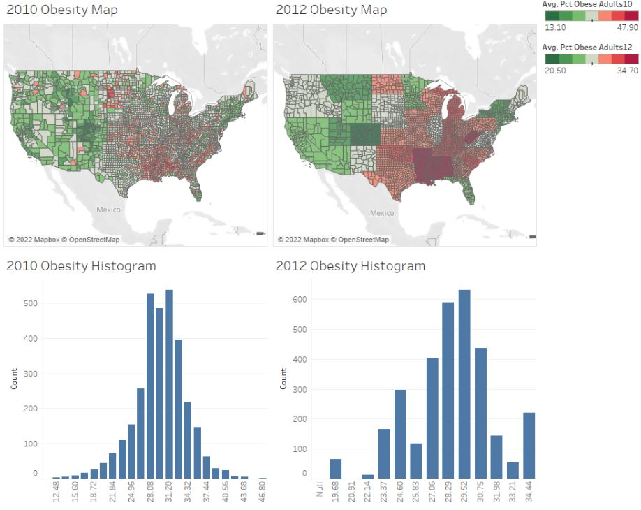
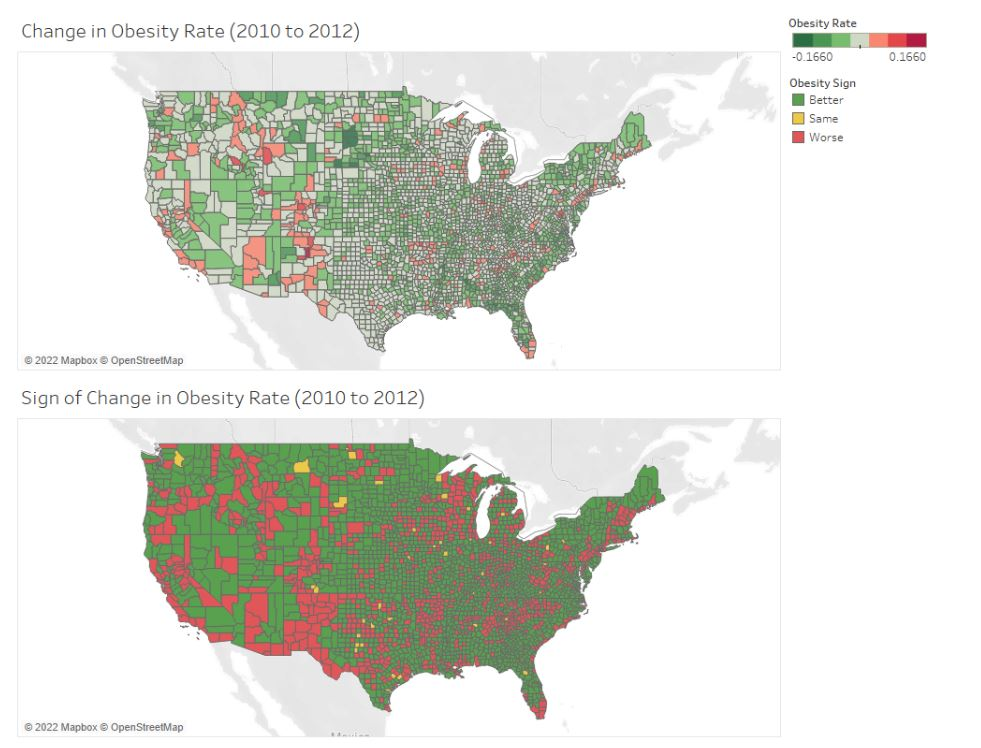

Data Visualization
Effective data visualizations are a critical part of the data analytics process. Without strong and clear visualizations, the data story is incomplete. I know this well from both professional and academic experiences, including my training during courses for my data visualization specialization at Ohio State.
Python Eye-Tracking Data Visualizations
 I developed these two interactive visualizations in Python using the Altair package. These were created for an assignment in one of my data visualization courses, focusing on creating meaningful and informative designs from a large research dataset recording the visual tracking of several participants. Those taking part in the study had varying levels of experience in the medical field, and were showed many pictures of potentially cancerous tumor scans. For all of these images, any specific point that a participant "fixated" on, or looked at for a significant period of time, was recorded, allowing for me to create this interactive visualization displaying all fixation points for all participants.
I developed these two interactive visualizations in Python using the Altair package. These were created for an assignment in one of my data visualization courses, focusing on creating meaningful and informative designs from a large research dataset recording the visual tracking of several participants. Those taking part in the study had varying levels of experience in the medical field, and were showed many pictures of potentially cancerous tumor scans. For all of these images, any specific point that a participant "fixated" on, or looked at for a significant period of time, was recorded, allowing for me to create this interactive visualization displaying all fixation points for all participants.
 This was my first time working with visualization data, and I quickly realized that due to the nature of human visual processing, it was neccessary to provide some segmentation to this visualization to begin to discern any meaningful insights. By encoding the length of a fixation to the size of each individual fixation point, as well as add the ability for a user to filter for a specific participant in the legend, users can begin to observe some noticable differences and patterns in the duration, location, and frequency of each participant's fixations. The cursor tool tip also ensures that users can easily identify which images correspond to which fixation points, as well as know for exactly how long they were fixated upon.
This was my first time working with visualization data, and I quickly realized that due to the nature of human visual processing, it was neccessary to provide some segmentation to this visualization to begin to discern any meaningful insights. By encoding the length of a fixation to the size of each individual fixation point, as well as add the ability for a user to filter for a specific participant in the legend, users can begin to observe some noticable differences and patterns in the duration, location, and frequency of each participant's fixations. The cursor tool tip also ensures that users can easily identify which images correspond to which fixation points, as well as know for exactly how long they were fixated upon.
Obesity Rate Tableau Dashboard
 This dashboard was created for an integrated systems engineering visual sensemaking course, in which I developed and refined my ability to create effective dashboards in Tableau. For this specific project, we were given a dataset with obesity rate data by US county for the years of 2010 and 2012. My team created an indicator that compared the obesity rate by county to that of the US average, and encoded that information into the US map by color, as indicated in the legend to the right of the visualizations. We also added corresponding histograms for both years, as well as creating a panel in the dashboard to compare obesity rates from 2010 to that of 2012. We were told that there was a specific error within the data that could be uncovered through creating such visualizations, and upon further investigation, we finally understood what the issue at hand was.
 When comparing the US map and histogram visualizations from 2010 to that of 2012, we see significantly less granularity. The US map has no variety by county within each state, and the histogram has distinctly less bins. After going back into the dataset that we were working with, it was uncovered that the county attribute was omitted, resulting in discrepancies in the dashboard across the years. This was an important lesson, as the quality of data insights are utterly dependent on the quality of the data itself. Proper assessment of missing, uncleaned, or incorrect data is essential to producing visualizations and dashboards that do not mislead viewers. This project helped me to truly understand how essential it is to ensure the integrity and the validity of the data at hand as a data analyst.